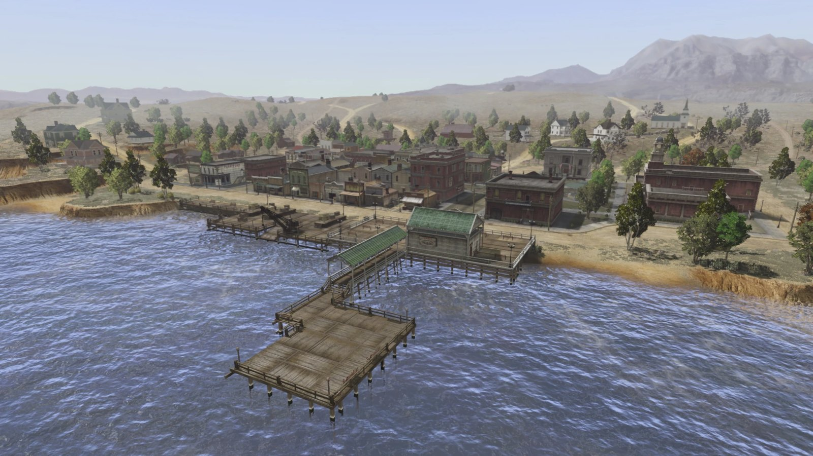
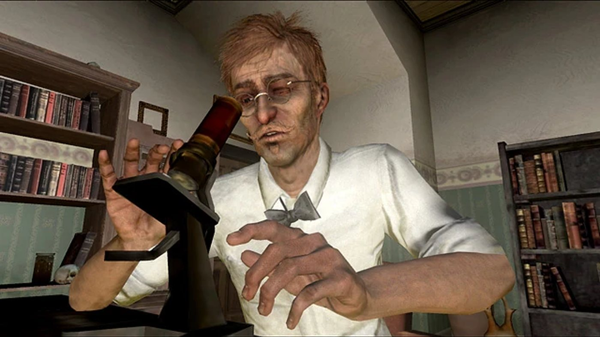
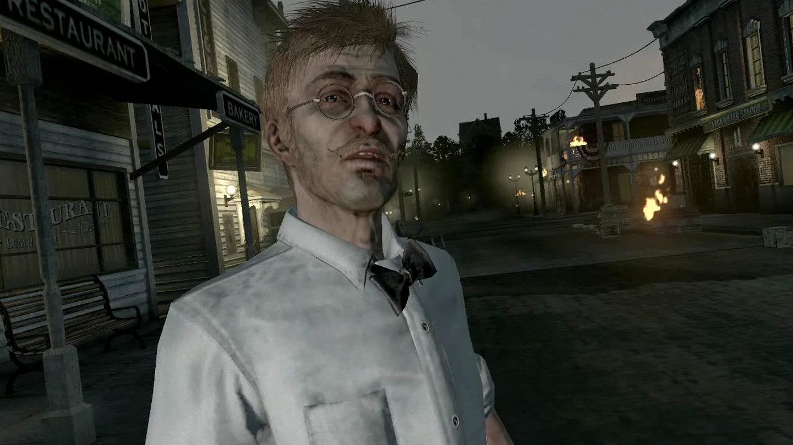
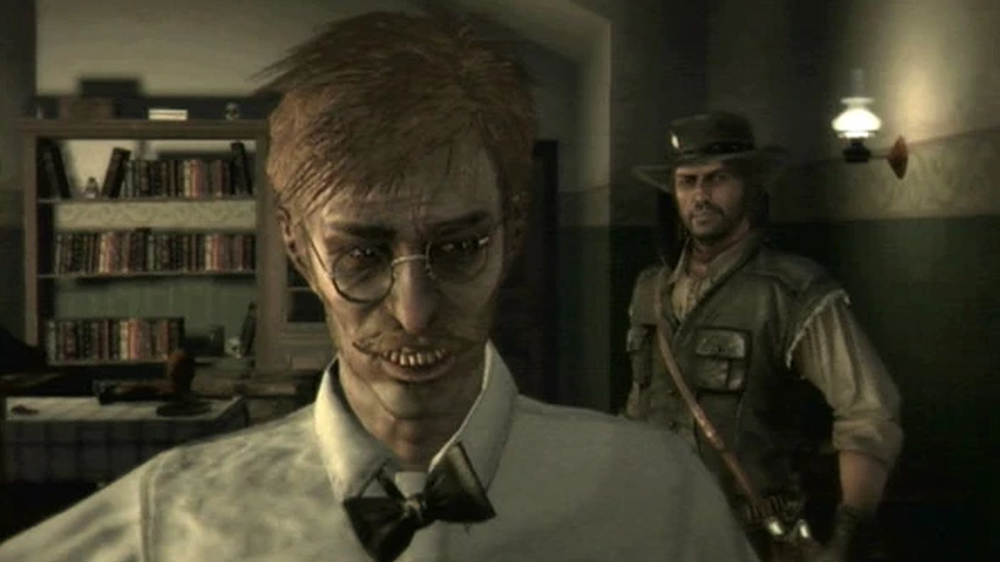
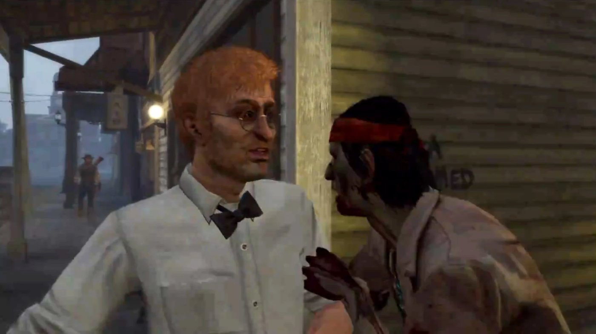

Personnage · West Elizabeth
Harold MacDougal
Harold MacDougal est un professeur d'anthropologie de Yale dans Red Dead Redemption (2010), dont l'action se déroule en 1911. En congé sabbatique, qu'il reconnaît lui avoir été imposé, il étudie les Amérindiens de West Elizabeth depuis sa chambre de l'hôtel de Blackwater. Edgar Ross et Archer Fordham lui confient l'informateur blessé du Bureau, Nastas, et Ross demande à John Marston de l'aider. MacDougal chevauche avec John et Nastas vers le repaire de Dutch van der Linde, à Cochinay, puis jusqu'à une rencontre avec des hommes de Dutch à Bearclaw Camp, où Nastas est abattu.
Quand la bande de Dutch attaque son hôtel, John lui fait traverser les toits et l'escorte jusqu'au train de Manzanita Post, et il repart pour Yale. En 1914, un journal annonce que Yale l'a renvoyé après qu'il a frappé un collègue avec un maillet de croquet. Dans Undead Nightmare, qui ne relève pas du canon, il est tué par Nastas devenu mort-vivant. Il a la voix de Joe Ochman.
- Nom
- Harold MacDougal
- Autres noms
- Professor, Professor MacDougal ; Dr. MacDougal dans le guide Game of the Year (Red Dead Wiki)
- Naissance
- Non précisée dans le jeu ; 42 ans selon le guide Game of the Year, cité par le Red Dead Wiki, qui en déduit une naissance vers 1869
- Statut
- En vie en 1914, quand le Blackwater Ledger & Sentinel annonce son renvoi de Yale ; tué par Nastas, devenu mort-vivant, dans Undead Nightmare (hors canon)
- Nationalité
- Américaine (originaire du Connecticut)
- Résidence
- Une chambre de l'hôtel de Blackwater (1911) ; New Haven, Connecticut
- Activité
- Professeur d'anthropologie à Yale, en congé sabbatique en 1911 ; renvoyé en 1914
- Famille
- Un père, selon le Red Dead Wiki
- Fréquentations
- Nastas, John Marston, Edgar Ross, Archer Fordham
- Arme
- Cattleman Revolver (Red Dead Wiki)
- Chevaux
- Ardennais, Cleveland Bay (Red Dead Wiki)
- Jeux
- Red Dead Redemption ; Undead Nightmare ; cité dans Red Dead Redemption 2 ; modèle multijoueur (pack Liars and Cheats, 2010)
- Voix
- Joe Ochman
Biographie
Origines
Harold MacDougal est professeur d'anthropologie à l'université Yale, à New Haven, dans le Connecticut. Il raconte à John Marston qu'il vient du Connecticut, qu'il enseigne à Yale et qu'il écrit des livres. D'après un article de presse de 1899, ses recherches portent sur la race et la civilisation, et il signe un ouvrage intitulé "The Scourge of Crossbreeding". En 1911, il confie à John qu'il cherche depuis huit ans à percer ce qu'il appelle la nature de l'âme sauvage, autrement dit la raison pour laquelle certaines sociétés s'élèvent et d'autres non. Il ajoute qu'il s'en est disputé à Yale avec un collègue nommé Fortisque, et que l'affaire a fait un petit scandale. Les jeux ne donnent ni sa date ni son lieu de naissance.
Il consomme de la cocaïne, qu'il s'injecte à la seringue ; dès sa deuxième rencontre avec John, il lui en propose, en assurant que la drogue l'aide à réfléchir. Dans "For Purely Scientific Purposes", il met une partie de son agitation sur le compte de ce qu'il appelle ses pulsions narcotiques ordinaires. Le Red Dead Wiki affirme qu'il a découvert la drogue à Yale ; aucune scène ne le montre. Le wiki rapporte aussi trois confidences qu'il situe dans "For Purely Scientific Purposes", alors qu'elles ne figurent pas dans la transcription de la mission : l'anthropologie le passionne depuis l'enfance, son père n'y voyait pas un vrai métier, et il vit sur son héritage pendant son éloignement de Yale. Dans les transcriptions, MacDougal reconnaît que son congé sabbatique lui a été plus ou moins imposé par les circonstances. À leur arrivée à Blackwater, Archer Fordham avance une autre raison (voir Citations).
Red Dead Redemption 2 (1899)
MacDougal n'apparaît pas dans Red Dead Redemption 2. Il y est cité dans un article de presse, et, d'après le Red Dead Wiki, l'un de ses livres y sert d'accessoire (voir Anecdotes).
Chapitre 6 : Beaver Hollow
L'article "Prominent Yale Scientist Speaks Out" paraît dans le Blackwater Ledger n° 71, la New Hanover Gazette n° 36 et le Saint Denis Times n° 52, des numéros publiés après "The King's Son". Il est titré "MIXING OF RACES DISCOURAGED." (le mélange des races déconseillé), avec pour sous-titre "AMERICAN SOCIETY AT RISK." (la société américaine en danger). Le journal rapporte que MacDougal a présenté la semaine précédente, lors d'un colloque, une communication intitulée "Savage Minds: The Racial Continuum Between Animal and God". Il y soutient que certaines races sont prédisposées à bâtir des sociétés plus évoluées que d'autres. L'article le cite : "Savages cannot construct buildings that rise to the heavens, but we have" (les sauvages ne savent pas élever des bâtiments jusqu'au ciel, nous si). Il le décrit parlant "in an agitated and excited manner" (d'un ton agité et fébrile). Il se termine sur une réfutation : son collègue Benjamin Fortescue "asserted that MacDougal has no empirical evidence to support his wild claims" (a affirmé que MacDougal n'avait aucune preuve empirique à l'appui de ses thèses farfelues).
Red Dead Redemption (1911)
Acte III : West Elizabeth
En 1911, MacDougal vit à Blackwater, en West Elizabeth, où il étudie les Amérindiens de la région. D'après Fordham, il aide aussi le Bureau of Investigation dans ses rapports avec les tribus locales. Le Red Dead Wiki date ses missions de novembre 1911, d'après l'ordre de parution des numéros du Blackwater Ledger. À ce moment, le Bureau retient toujours la femme et le fils de John Marston, et Edgar Ross exige désormais que John retrouve Dutch van der Linde. MacDougal apparaît dans quatre missions du troisième acte : "Bear One Another's Burdens" et les trois missions de sa propre série.
À la fin de "Bear One Another's Burdens", Ross, Fordham et John ramènent de l'épave du Serendipity l'informateur du Bureau, Nastas, roué de coups et blessé à la jambe. Ross décide de le confier à MacDougal pour voir ce que le professeur pourra en tirer, lui-même disant ne pas savoir communiquer avec les Amérindiens. Ils s'arrêtent devant ce que Fordham appelle le bureau de MacDougal. Fordham demande au professeur de découvrir ce que Nastas sait de Dutch et promet d'envoyer un médecin. MacDougal répond qu'il fera de son mieux. Avant de repartir, Ross le présente à John comme un bon ami du gouvernement et invite John à l'aider dans ses recherches.
"At Home with Dutch" s'ouvre sur MacDougal penché sur son microscope. Il a comparé le sang d'Amérindiens et d'hommes blancs de même taille, de même poids et de même âge, sans trouver la moindre différence. Il reconnaît que ce résultat contredit son dernier livre. Il demande à John s'il a du sang nordique et voit en lui un Blanc doté d'un esprit sauvage. Quand Nastas entre, MacDougal s'adresse à lui lentement, par images, en parlant de pantoufles, de lapins et d'étoiles. Nastas lui répond dans un anglais parfait qu'il a grandi dans une réserve et qu'il est allé à l'école. Il annonce ensuite qu'il sait où se cache la bande de Dutch, dans les collines de Cochinay, et que des jeunes de la réserve suivent Dutch. MacDougal accueille la nouvelle comme la preuve de sa propre théorie et part à cheval avec John et Nastas.
En chemin, MacDougal explique qu'il ne veut pas la mort de Dutch : un Blanc qui vit parmi les Amérindiens l'intéresse comme sujet d'étude. Il raconte que Ross lui a parlé du passé commun de John et de Dutch alors qu'il était sous l'emprise de la drogue. Si le joueur n'a pas encore débloqué le succès Manifest Destiny, les trois hommes croisent des chasseurs lancés à la poursuite de bisons. Nastas prévient que la chasse des Blancs finira par anéantir les troupeaux ; MacDougal lui rétorque que l'extinction est un mythe et que la chasse rendra l'espèce plus forte. Dans les bois de Tall Trees, il devient nerveux et avoue qu'il sort rarement de sa chambre. Au pied des falaises, il reconnaît ne pas supporter le vide, laisse John et Nastas grimper seuls et repart vers Blackwater.
John observe le camp de Dutch avec les jumelles d'un éclaireur, jusqu'à ce que Dutch le repère et tire ; la balle frappe les jumelles et John bascule en arrière, assommé. John se réveille à Blackwater, MacDougal lui agitant des sels sous le nez. Le professeur affirme d'abord que Nastas et lui l'ont redescendu de la montagne. Nastas maugrée, et il se reprend : c'est Nastas qui a entendu les coups de feu et qui a redescendu John tout seul, lui-même ayant improvisé le plan de repli. Nastas révèle alors que des amis à lui ont rejoint Dutch, et MacDougal propose de les rencontrer pour leur éviter le pire. Quand Nastas rappelle que toutes ces terres appartenaient autrefois à son peuple, MacDougal répond que les Blancs leur ont apporté la civilisation. Nastas lui lance que, pour un sage, il est bien bête.
Dans "For Purely Scientific Purposes", MacDougal accueille John dans un état d'agitation et lui annonce qu'il a enfin résolu cette énigme (voir Origines). Nastas a organisé une rencontre avec quelques hommes de Dutch à la cabane de Bear Claw, à Bearclaw Camp. MacDougal y voit une rencontre des esprits et se demande s'il pourra prélever des échantillons de peau sous leurs pieds. En chemin, un grizzli traverse la piste et MacDougal hurle à John de tirer. Les deux hommes font feu et abattent l'ours. Nastas fait remarquer que l'animal ne montrait aucun signe d'agressivité et qu'il serait passé son chemin si personne n'avait tiré.
Trois hommes de Dutch attendent dans la cabane. MacDougal leur assure qu'ils viennent en paix et que la violence n'est pas une solution. L'un d'eux, Enepay, rend les gens comme lui responsables du sort fait aux tribus et ordonne aux visiteurs de lever les mains. Quand Nastas proteste que ce n'était pas ce qui avait été convenu, Enepay le traite de serpent perfide et l'abat d'une balle dans la tête. John tue Enepay, Kosumi et Hinto, puis les hommes postés dehors, pendant que MacDougal le supplie de ne pas l'abandonner. Sur le chemin du retour, deux autres groupes d'hommes de Dutch les attaquent. MacDougal en conclut que l'esprit sauvage ne peut pas être civilisé, alors que Nastas et les échantillons de sang l'avaient conduit à penser le contraire. John lui fait remarquer qu'ils sont tombés dans une embuscade de la bande de Dutch, et qu'il est bien tôt pour en tirer des conclusions sur tout un peuple. De retour à Blackwater, MacDougal réclame une seringue, prévient qu'il ne dormira sans doute plus jamais, puis remercie John de lui avoir sauvé la vie.
Dans "The Prodigal Son Returns (To Yale)", John trouve MacDougal en train de faire ses valises. Le professeur reconnaît qu'il n'est pas taillé pour ce genre de chose, traite ses agresseurs de sauvages et s'injecte de la cocaïne pour se calmer. Un coup de feu claque ; d'après la page de la mission, Dutch vient de faire voler une fenêtre en éclats. Dutch interpelle John depuis l'extérieur, annonce qu'il va les tuer tous les deux et demande qu'on lui envoie l'universitaire, pour que ses hommes lui montrent ce qu'ils pensent de l'anthropologie. John fait mine de vouloir livrer MacDougal, puis l'entraîne par la chambre voisine, où un couple s'indigne. MacDougal monte le premier sur le toit, où il est aussitôt pris en otage. D'après la page de la mission, John grimpe à une échelle pour le rejoindre et trouve un homme de Dutch, Nashoba, qui le tient en joue ; John l'abat. John élimine les tireurs postés sur les toits alentour, et les deux hommes quittent la ville à cheval.
Sur la route de la gare de Manzanita Post, John repousse encore deux embuscades. MacDougal confie qu'il était venu dans l'Ouest pour consigner la grandeur des derniers jours de la conquête, et qu'il n'y a trouvé que des gens qui s'entretuent. Sur le quai, il déclare ses recherches terminées et compte bien recevoir un prix à New Haven. Il fait ses adieux à John, le serre dans ses bras et lui souhaite bonne chance. D'après la page de la mission, il pleure en montant dans le train qui le ramène à Yale. On ne le revoit plus dans Red Dead Redemption. Par la suite, Ross et l'armée prennent d'assaut le repaire de Dutch à Cochinay, où Dutch se laisse tomber d'une falaise.
Le numéro 59 du Blackwater Ledger, disponible après "The Prodigal Son Returns (To Yale)", relate l'attaque sous le titre "BLACKWATER BESET BY SAVAGES. NOTED ANTHROPOLOGIST SURVIVES" (Blackwater assiégée par des sauvages, un anthropologue réputé en réchappe). Il présente MacDougal comme "a prominent academic on sabbatical from Yale University" (un éminent universitaire en congé sabbatique de Yale), écrit qu'il "was apparently ambushed at his room in the Blackwater Hotel" (aurait été attaqué dans sa chambre de l'hôtel de Blackwater), et lui attribue, avec "an unnamed gunman" (un tireur dont le nom n'est pas donné), le mérite d'avoir maîtrisé les assaillants. Le journal désigne Dutch van der Linde comme le chef présumé de la bande. Le même numéro publie un avis dans sa rubrique Miscellany : "Nastas (Surname Unknown), of Indian descent, has passed away at Bear Claw Cabin in Tall Trees. May you find God, my dear friend. Prof. Harold MacDougal Esq." (Nastas, nom de famille inconnu, d'ascendance indienne, est décédé à la cabane de Bear Claw, à Tall Trees. Puisses-tu trouver Dieu, mon cher ami. Pr Harold MacDougal).
L'article de 1914
Acte III : West Elizabeth
Le numéro 213 du Blackwater Ledger & Sentinel, daté de 1914 et acheté par Jack Marston après la mort de John, publie l'article "Anthropologist Turns Savage" (l'anthropologue devient sauvage), sous-titré "New Haven in Shock" (New Haven sous le choc). Il annonce que MacDougal "has been expelled from the university following a drunken brawl with fellow academic Lionel Fortisque" (a été renvoyé de l'université à la suite d'une bagarre d'ivrognes avec un collègue, Lionel Fortisque). Il rappelle qu'il a passé six mois en West Elizabeth en 1911 et qu'il a publié l'année précédente une thèse accablante sur l'impossibilité d'apprivoiser l'esprit sauvage. Citant un journal du Connecticut, il précise que la dispute a éclaté au sujet de cannibales polynésiens, lors d'une garden-party, et que MacDougal a frappé Fortisque "with a croquet mallet" (avec un maillet de croquet).
L'article poursuit : "the agitated professor fled to the roof of Woolsey Hall where he removed his clothes and threatened to jump if somebody did not bring him a plate of Beef Wellington and a bottle of '94 Claret." (le professeur, très agité, s'est réfugié sur le toit du Woolsey Hall, s'y est déshabillé et a menacé de sauter si l'on ne lui apportait pas une assiette de bœuf Wellington et une bouteille de bordeaux millésime 94). Selon les responsables de l'université, il "had become increasingly unhinged in recent months" (perdait de plus en plus la raison depuis quelques mois). Il était déjà en période probatoire, accusé d'avoir voulu payer un jardinier pour qu'il lui ôte le haut du crâne, afin de photographier un cerveau vivant. L'article ne précise pas le mois de ces événements. C'est la dernière mention de MacDougal dans la série ; rien n'est dit de ce qu'il devient ensuite.
Undead Nightmare (hors canon)
Undead Nightmare, une extension sortie en 2010, ne fait pas partie du canon de la série. MacDougal apparaît au début de "Curious Tales from Blackwater". John arrive à Blackwater en quête d'un médecin pour Abigail et Jack, et trouve la ville vide, à l'exception de MacDougal, planté sans arme au milieu de la rue. Le professeur explique qu'il est revenu pour poursuivre ses recherches et avoue n'avoir aucune idée de ce qui se passe. John propose de partir ensemble à la recherche de survivants. MacDougal veut d'abord aller chercher sa sacoche au bout d'une rue déserte ; la page de la mission parle d'une sacoche de médecin. Selon la page du personnage sur le Red Dead Wiki, il l'avait laissée à Nastas. Au bout de quelques pas, Nastas, devenu mort-vivant, se jette sur lui et le dévore sous les yeux de John.
Le joueur peut ensuite abattre les deux morts-vivants ou les éviter. D'après la page de la mission, s'ils sont épargnés, ils peuvent réapparaître plus tard dans la mission : en ville, pendant que John nettoie Blackwater, où il faut alors s'en occuper pour terminer, ou juste à la sortie du cimetière une fois celui-ci purifié. La page du personnage ajoute que MacDougal mort-vivant peut être ligoté au lieu d'être abattu, et qu'à la sortie du cimetière le joueur peut aussi le laisser errer.
Personnalité
Le Red Dead Wiki cite la description du personnage par Rockstar : "A highly-strung anthropology professor, on a forced sabbatical from Yale." (un professeur d'anthropologie à fleur de peau, en congé sabbatique forcé de Yale). Il cite aussi le guide de l'édition Game of the Year, qui le présente comme "very much, an east coast turn-of-the-century man" (un homme de la côte Est du tournant du siècle, et pas qu'un peu) et comme "an optimist who loves the American way of life and speaks in large metaphors" (un optimiste qui aime le mode de vie américain et parle par grandes métaphores). D'après ce guide, il profite de son congé sabbatique pour écrire "a book about Native Americans and the last days of the old west" (un livre sur les Amérindiens et les derniers jours du vieil Ouest). Le même guide affirme qu'il a pris "his study of opium a little too seriously" (son étude de l'opium un peu trop au sérieux) et que son congé a peut-être été imposé. Dans les missions, c'est pourtant la cocaïne qu'il nomme (voir Origines).
Il se répète ("Good day, good day", "but, but, but") et bégaie dès qu'il est nerveux ou surexcité. Il se tient à l'écart du danger chaque fois qu'il le peut (voir la biographie). Il classe les peuples en civilisés et en sauvages. Il désigne les Amérindiens par le mot sauvage du début à la fin. Ses conclusions à leur sujet varient d'une mission à l'autre (voir la biographie).
Dans ses propres mots
Quand John lui conseille, dans "At Home with Dutch", de ne pas trop interpréter son passé avec Dutch : "It's my job to read too much into everything, dear boy." (mon métier, c'est justement de tout surinterpréter, mon cher). Dans les bois sombres de Tall Trees, quand John lui demande s'il a déjà vu des arbres : "Good lord, no. I rarely leave my room. I explore with the mind, Mr. Marston." (grands dieux, non ; je sors rarement de ma chambre, j'explore par l'esprit, monsieur Marston). Au pied des falaises : "I'm afraid I don't really have much of a head for heights. More of a head for highs..." (je crains de ne pas avoir la tête faite pour les hauteurs ; plutôt pour les euphories...).
De retour à Blackwater, après que Nastas a redescendu John de la montagne : "I'm more of a planner than a man of action." (je suis plus un stratège qu'un homme d'action). Sur la route du retour depuis Bearclaw Camp, dans "For Purely Scientific Purposes" : "I must say... cocaine can be a cruel mistress." (je dois dire que la cocaïne peut être une maîtresse cruelle).
Noms
John et Nastas l'appellent Professor, Edgar Ross dit Professor MacDougal, et Archer Fordham simplement MacDougal. Dutch van der Linde ne prononce jamais son nom : il parle de "your friend there the professor" (ton ami le professeur) et demande à John de faire sortir "that academic" (cet universitaire). Le guide de l'édition Game of the Year, cité par le Red Dead Wiki, l'appelle Dr. MacDougal, et le Red Dead Wiki francophone lui donne le surnom de Professeur. Il signe son avis dans le numéro 59 du Blackwater Ledger "Prof. Harold MacDougal Esq." Il appelle John Mr. Marston, "dear boy" (mon cher) et une fois "old bean" (mon vieux) ; pris en otage sur le toit de l'hôtel de Blackwater, il l'appelle par son prénom : "John! Help me, John!" (John ! Aidez-moi, John !).
Apparence
Il a des cheveux blond roux en bataille, une fine moustache aux pointes recourbées, une barbe de quelques jours et des lunettes rondes cerclées de métal. À Blackwater, il porte une chemise blanche et un nœud papillon dénoué. D'après le Red Dead Wiki, ses bottes ressemblent au modèle de l'armée américaine, mais se lacent sur le devant.
Relations

John Marston
Edgar Ross envoie John aider le professeur dans ses travaux (voir la biographie). MacDougal résume le passé de John avec Dutch en une histoire de naïveté et de trahison.
John se moque ouvertement de lui : il le traite d'imbécile devant Nastas et plaisante sur l'idée de le livrer aux hommes de Dutch (voir Citations). John le protège pourtant à Bearclaw Camp, sur le chemin du retour et à Blackwater, puis l'escorte jusqu'à son train (voir la biographie).

Nastas
Nastas est l'informateur du Bureau, que Ross confie à MacDougal après l'avoir retrouvé blessé sur le Serendipity (voir la biographie). C'est lui qui connaît le chemin du repaire de Dutch et qui organise la rencontre de Bearclaw Camp. Les deux hommes se querellent pendant les chevauchées (voir la biographie et les citations).
MacDougal se dit soulagé de l'avoir à ses côtés en route vers ce rendez-vous de Bearclaw Camp, où Nastas est abattu. Il fait ensuite paraître un avis de décès dans le Blackwater Ledger (voir la biographie).

Edgar Ross
Ross confie Nastas blessé au professeur et le présente à John (voir la biographie). Il a aussi parlé à MacDougal du passé de John avec Dutch (voir la biographie).

Archer Fordham
Fordham présente MacDougal comme un anthropologue qui aide le Bureau dans ses rapports avec les Amérindiens de la région, et donne sa propre version de son départ de Yale (voir Citations). C'est lui qui le charge d'interroger Nastas (voir la biographie).

Dutch van der Linde
MacDougal ne souhaite pas la mort de Dutch, qu'il voudrait étudier (voir la biographie et les citations). Les hommes de Dutch lui tendent un guet-apens à Bearclaw Camp, puis Dutch assiège son hôtel (voir la biographie).
Enepay, Kosumi, Hinto and Nashoba
Membres de la bande de Dutch. Enepay, Kosumi et Hinto reçoivent MacDougal à Bearclaw Camp, où Enepay balaie ses paroles de paix et abat Nastas (voir la biographie). Selon les pages de mission, Nashoba est le tireur qui retient MacDougal en otage sur le toit de l'hôtel de Blackwater ; la transcription ne parle que d'un hors-la-loi.
Lionel Fortisque
Un collègue de Yale, mêlé à un petit scandale avec MacDougal, puis frappé au maillet de croquet en 1914 (voir la biographie).
Benjamin Fortescue
Le collègue qui, selon l'article "Prominent Yale Scientist Speaks Out" de Red Dead Redemption 2, reproche à la communication de MacDougal de 1899 de manquer de preuves empiriques (voir la biographie). Les journaux des deux jeux écrivent Fortescue et Fortisque, avec des prénoms différents ; les jeux ne disent jamais s'il s'agit du même homme.
The newlyweds
Un couple installé dans la chambre voisine de celle de MacDougal, à l'hôtel de Blackwater. Quand John et lui font irruption pour gagner le toit, MacDougal les salue poliment et le mari proteste (voir la biographie).
His father
Le jeu ne le montre jamais. D'après le Red Dead Wiki, il ne tenait pas l'anthropologie pour un vrai métier (voir Origines).
Recherches, armes et chevaux
Recherches et publications
Il travaille depuis sa chambre de l'hôtel de Blackwater, que Fordham appelle son bureau, avec un microscope et des rayonnages de livres. Sa méthode, en 1911, consiste à comparer des échantillons de sang d'Amérindiens et d'hommes blancs de même taille, de même poids et de même âge (voir la biographie). Le Bureau se sert de lui comme intermédiaire auprès des Amérindiens de la région (voir Relations). Ses écrits connus, tous cités dans des journaux des deux jeux :
- The Scourge of Crossbreeding, un livre paru avant 1899, cité dans l'article "Prominent Yale Scientist Speaks Out" de Red Dead Redemption 2.
- Savage Minds: The Racial Continuum Between Animal and God, une communication présentée à des confrères lors d'un colloque en 1899 (voir la biographie).
- Une thèse sur l'impossibilité de dompter l'esprit sauvage, publiée en 1913, dont le Blackwater Ledger & Sentinel de 1914 ne donne pas le titre (voir la biographie).
Armes
Le Red Dead Wiki lui attribue un Cattleman Revolver. Selon la page de la mission, "For Purely Scientific Purposes" est la seule mission où il se sert de son arme, contre le grizzli (voir la biographie). Il ne tire dans aucune autre mission.
Chevaux
Le Red Dead Wiki lui attribue deux montures, un Ardennais et un Cleveland Bay. Il chevauche avec John et Nastas jusqu'à Tall Trees et jusqu'à Bearclaw Camp, puis avec John jusqu'à la gare de Manzanita Post (voir le tableau des missions). Avant la deuxième chevauchée, c'est Nastas qui amène les chevaux devant le bâtiment. La page de la mission "For Purely Scientific Purposes" relève une bizarrerie : dans cette mission, les montures des deux hommes vont plus vite que l'American Standardbred et même que le War Horse.
Côté jeu
"At Home with Dutch" et "For Purely Scientific Purposes" échouent si John agresse, tue ou abandonne MacDougal ou Nastas, ou s'il tue leurs chevaux. "The Prodigal Son Returns (To Yale)" échoue si John l'abandonne, s'il est tué pendant qu'on le tient en otage sur le toit, ou si John le blesse pendant la prise d'otage.
Missions
MacDougal propose une série de trois missions principales dans le troisième acte de Red Dead Redemption, numérotées de 44 à 46 dans l'ordre de l'histoire. Elle s'ouvre après "Bear One Another's Burdens", la mission d'Edgar Ross qui lance la partie West Elizabeth, et se déroule en parallèle de la série de Ross. La dernière des trois, "The Prodigal Son Returns (To Yale)", mène à "And You Will Know the Truth", une mission de Ross. Il ouvre aussi une mission de l'extension Undead Nightmare.
Apparitions
| Mission | Acte | Rôle de MacDougal |
|---|---|---|
| Bear One Another's Burdens | Acte III : West Elizabeth | Accueille Nastas, blessé, que lui amènent Ross et Fordham à la fin de la mission. Récompenses : le High Power Pistol, 150 points de célébrité (200 avec la médaille d'or) et 25 d'honneur. |
| At Home with Dutch | Acte III : West Elizabeth | Donneur de mission. Chevauche avec John et Nastas vers Cochinay, rebrousse chemin au pied des falaises, puis ranime John à Blackwater. Récompenses : les jumelles, 25 points d'honneur, 50 de célébrité avec la médaille d'or ; le succès "A Savage Soul". |
| For Purely Scientific Purposes | Acte III : West Elizabeth | Donneur de mission. Se rend au rendez-vous avec les hommes de Dutch à Bearclaw Camp, où Nastas est tué ; John le raccompagne à Blackwater. Récompenses : 25 points d'honneur, 50 de célébrité avec la médaille d'or. |
| The Prodigal Son Returns (To Yale) | Acte III : West Elizabeth | Donneur de mission. Fuit l'hôtel de Blackwater par les toits avec John et prend le train à Manzanita Post. Récompenses : 100 dollars, 25 points d'honneur, 50 de célébrité avec la médaille d'or. |
| Curious Tales from Blackwater | Undead Nightmare | Donneur de mission (hors canon). Retrouvé dans Blackwater déserte, puis dévoré par Nastas devenu mort-vivant. Récompenses : la torche et la Repeater Carbine ; le succès "The Downward Spiral". |
Mission où il est évoqué
| Mission | Chapitre | Lien avec MacDougal |
|---|---|---|
| Help a Brother Out | RDR2, chapitre 4 | N'apparaît pas. D'après le Red Dead Wiki, l'un de ses livres sert d'accessoire dans la boutique du receleur (voir Anecdotes). |
Citations
Les répliques ci-dessous sont citées dans leur version originale anglaise, suivies d'une traduction. Les répliques de mission sont vérifiées sur les transcriptions du Red Dead Wiki. Celles d'Undead Nightmare proviennent de la liste de ses répliques publiée par le wiki, faute de transcription pour cette mission.
Ce que les autres disent de lui
So, this is the office of an anthropologist named MacDougal. He was thrown out of Yale for degeneracy.
Archer Fordham, Bear One Another's Burdens (RDR1, acte III), à l'arrivée à Blackwater. Traduction : « Voilà le bureau d'un anthropologue du nom de MacDougal. Yale l'a mis à la porte pour dépravation. »They see him and they presume we're all idiot academics.
Edgar Ross, Bear One Another's Burdens (RDR1, acte III), quand Fordham explique que le professeur les aide avec les Amérindiens. Traduction : « En le voyant, ils s'imaginent qu'on est tous des universitaires idiots. »For a wise man, you are a very stupid man, mister.
Nastas, At Home with Dutch (RDR1, acte III), après l'anecdote de MacDougal sur une connaissance de Yale. Traduction : « Pour un sage, vous êtes un homme bien bête, monsieur. »I think they are interested to find out what conclusions a white man was reached on hundreds of years of culture and society from the comfort of his hotel room.
Nastas, For Purely Scientific Purposes (RDR1, acte III), quand John demande pourquoi les hommes de Dutch ont accepté le rendez-vous (texte de la transcription). Traduction : « Je crois qu'ils sont curieux de savoir à quelles conclusions un Blanc est arrivé sur des siècles de culture et de société, bien installé dans sa chambre d'hôtel. »Harold: Please, sir, what are you going to do? / Marston: I'm going to hand you over to them and watch them tear you limb from limb. / Harold: What? / Marston: I'm just kidding. We're going to run across the rooftops, get you back to your ivory tower.
The Prodigal Son Returns (To Yale) (RDR1, acte III), après la sommation de Dutch. Traduction : « Harold : Je vous en prie, monsieur, qu'allez-vous faire ? / Marston : Je vais vous livrer à eux et les regarder vous mettre en pièces. / Harold : Quoi ? / Marston : Je plaisante. On va filer par les toits et vous ramener dans votre tour d'ivoire. »
Red Dead Redemption, acte III
They're exactly the same! It's remarkable. It completely refutes my last book, but I'll tell you what, sir, this sabbatical in the field may have been somewhat forced upon me by circumstance, but my scholarship has benefitted enormously!
At Home with Dutch (RDR1, acte III), à propos des échantillons de sang. Traduction : « Ils sont exactement identiques ! C'est remarquable. Cela réfute entièrement mon dernier livre, mais je vais vous dire, monsieur : ce congé sabbatique sur le terrain m'a peut-être été quelque peu imposé par les circonstances, mais mes travaux en ont énormément profité ! »Kill him? Good God, no. What is it with your people out here? No, Van der Linde fascinates me. A white man living among natives. A civilized mind turned savage.
At Home with Dutch (RDR1, acte III), quand John lui demande s'il veut, lui aussi, la mort de Dutch. Traduction : « Le tuer ? Grand Dieu, non. Qu'avez-vous donc tous, par ici ? Non, Van der Linde me fascine. Un Blanc qui vit parmi les indigènes. Un esprit civilisé devenu sauvage. »MacDougal: Look, Mr. Marston. Buffalo! What a noble beast! / ... / MacDougal: Who teaches you this nonsense? Extinction is a myth, refuted by Darwin. Species don't die, they evolve. Hunting, in time, will make the buffalo stronger.
At Home with Dutch (RDR1, acte III), scène facultative dans les plaines (seulement si le succès Manifest Destiny n'est pas débloqué). Traduction : « MacDougal : Regardez, monsieur Marston. Des bisons ! Quelle noble bête ! / ... / MacDougal : Qui vous apprend ces sottises ? L'extinction est un mythe, Darwin l'a réfuté. Les espèces ne meurent pas, elles évoluent. Avec le temps, la chasse rendra le bison plus fort. »Nastas has set up a meeting. A pow-wow, I think they call it. A meeting of minds! Of souls! Indians and whites, academics and criminals, coming together to find a common understanding!
For Purely Scientific Purposes (RDR1, acte III), en route vers Bearclaw Camp. Traduction : « Nastas a organisé une rencontre. Un pow-wow, je crois que c'est ainsi qu'ils disent. Une rencontre des esprits ! Des âmes ! Indiens et Blancs, universitaires et criminels, réunis pour trouver un terrain d'entente ! »Well I guess this completes my research! Finished, done complete. Ship the book with one sentence: The Savage Mind Cannot Be Civilized.
For Purely Scientific Purposes (RDR1, acte III), après la première embuscade sur le chemin du retour. Traduction : « Eh bien, voilà qui conclut mes recherches ! Terminé, bouclé. Qu'on publie le livre en une seule phrase : l'esprit sauvage ne peut être civilisé. »Thank you, Mr Marston. I could be boiling in a pot right now, if it wasn't for you.
For Purely Scientific Purposes (RDR1, acte III), devant son bureau. Traduction : « Merci, monsieur Marston. Sans vous, je serais peut-être en train de bouillir dans une marmite. »Not having a bullet in your flipping neck, sir. I'm not cut out for this. No, not cut out for this at all.
The Prodigal Son Returns (To Yale) (RDR1, acte III), sur la condition sans laquelle aucune recherche n'est possible. Traduction : « Ne pas avoir une fichue balle dans le cou, monsieur. Je ne suis pas fait pour ça. Non, pas fait pour ça du tout. »Not me, sir. I'm from Connecticut. I'm a professor at Yale! I write books! I do not deserve to die out here!
The Prodigal Son Returns (To Yale) (RDR1, acte III), quand John estime qu'ils sont tous des sauvages. Traduction : « Pas moi, monsieur. Je suis du Connecticut. Je suis professeur à Yale ! J'écris des livres ! Je ne mérite pas de mourir ici ! »You know, I dreamt of documenting the last days of the Old West. The romance, the honor, the nobility! But it turns out it's just people killing each other.
The Prodigal Son Returns (To Yale) (RDR1, acte III), sur la route de Manzanita Post. Traduction : « Vous savez, je rêvais de raconter les derniers jours du vieil Ouest. Le romanesque, l'honneur, la noblesse ! Mais en fin de compte, ce ne sont que des gens qui s'entretuent. »My research is complete; much as I thought, there's no civilizing this savage land.
The Prodigal Son Returns (To Yale) (RDR1, acte III), à la gare de Manzanita Post. Traduction : « Mes recherches sont terminées ; comme je le pensais, impossible de civiliser cette terre sauvage. »Ah, but they'll give me a prize in New Haven for this. Well, they bloody better. Well...goodbye, Mr. Marston. Best of luck, dear friend.
The Prodigal Son Returns (To Yale) (RDR1, acte III), ses derniers mots à John, sur le quai (il le serre dans ses bras avant la dernière phrase). Traduction : « Ah, mais on me remettra un prix à New Haven pour ça. Ils ont intérêt, bon sang. Bon... au revoir, monsieur Marston. Bonne chance, cher ami. »
Undead Nightmare (hors canon)
Well, sir, I'm a man of science, a man of great learning, a thinker, a wise man and I'll be honest with you, sir... I haven't got a fucking clue.
Curious Tales from Blackwater (Undead Nightmare), quand John lui demande ce qui se passe, d'après le Red Dead Wiki. Traduction : « Eh bien, monsieur, je suis un homme de science, un puits de savoir, un penseur, un sage, et je vais être franc avec vous, monsieur... je n'en ai pas la moindre putain d'idée. »Could you just wait a sec here, would you please? I'm going to wander down that lonely deserted street and get my bag.
Curious Tales from Blackwater (Undead Nightmare), à John, d'après le Red Dead Wiki. Traduction : « Vous voulez bien m'attendre une seconde ici, s'il vous plaît ? Je vais descendre cette rue déserte et récupérer ma sacoche. »Affirmative, a couple of minutes.
Curious Tales from Blackwater (Undead Nightmare), ses derniers mots, d'après le Red Dead Wiki. Traduction : « Affirmatif, deux minutes. »
Conception et interprétation
Le casting
Wikipédia attribue à Joe Ochman le rôle du professeur Harold MacDougal dans Red Dead Redemption (2010), la même ligne de crédit le citant aussi pour un employé du gouvernement. Son article sur Undead Nightmare, l'extension sortie plus tard la même année, nomme de nouveau Ochman pour MacDougal ; sa propre page Wikipédia précise que cette seconde prestation n'est pas créditée. Wikipédia présente Ochman comme un acteur américain qui travaille surtout le doublage, pour l'animation, le cinéma et le jeu vidéo. Parmi ses autres rôles figurent Jiminy Cricket dans Kingdom Hearts III, Will A. Zeppeli dans JoJo's Bizarre Adventure, Zeno Zoldyck dans Hunter x Hunter et William Price dans Life Is Strange (2015).
Après le jeu
Dans un entretien écrit publié sur un blog d'utilisateur du Red Dead Wiki le 10 novembre 2011, K. Harrison Sweeney, la voix d'Irish, disait avoir discuté avec Anthony De Longis, Joe Ochman et Frank Noon d'une possible participation à From the Trailer to the Grave, une comédie qu'il avait écrite et comptait tourner avec des acteurs de Red Dead Redemption.
Accueil
Dans la presse
Le 10 novembre 2018, WhatCulture publie une liste d'Ewan Paterson consacrée à dix-huit clins d'œil et références de Red Dead Redemption 2. L'entrée 17 est Harold MacDougal. Paterson le décrit comme "an eccentric (read: racist drug addict)" (un excentrique, comprendre : un toxicomane raciste) des derniers moments du premier jeu, un professeur de Yale qui étudie la population amérindienne "only in the interest of furthering his own bigoted perspective" (dans le seul but de conforter ses préjugés). Il relève que MacDougal n'apparaît pas en personne dans la suite, mais qu'il y est cité dans des dialogues et des imprimés du jeu.
Autres médias et postérité
Multijoueur
MacDougal devient un modèle de personnage jouable du multijoueur de Red Dead Redemption avec le Liars and Cheats Pack, présenté en détail par Rockstar le 27 août 2010 et sorti le 21 septembre 2010. On le choisit dans la section Damnation de l'Outfitter, aux côtés d'Abraham Reyes, d'Agustin Allende, de Bill Williamson, de Dutch van der Linde, d'Edgar Ross et d'Irish. Les versions de Red Dead Redemption sorties sur PlayStation 4 et Nintendo Switch le 17 août 2023, puis sur PC le 29 octobre 2024, ne comprennent pas le multijoueur.
Visuels d'Undead Nightmare
D'après le Red Dead Wiki, une illustration promotionnelle d'Undead Nightmare représente MacDougal en mort-vivant. L'un des écrans de chargement de l'extension le montre aussi sous cette forme, lancé à la poursuite d'une silhouette hors champ près du saloon de Blackwater.
Anecdotes
- Le titre "The Prodigal Son Returns (To Yale)" renvoie à la parabole du fils prodigue, rapportée dans l'Évangile selon Luc (15, 11-32).
- D'après la page de mission de "The Prodigal Son Returns (To Yale)", on voit MacDougal glisser une Bible dans son sac. Selon la même page, Chu Fuk Choi, un inconnu du jeu, loge plus tard dans cette chambre. La mallette de MacDougal y est restée, mais pas la Bible.
- Dans Red Dead Redemption 2, d'après le Red Dead Wiki, un exemplaire de "The Scourge of Crossbreeding" dissimule le levier qui ouvre la porte secrète de la bibliothèque, dans la boutique du receleur de Saint-Denis, pendant la mission d'inconnu "Help a Brother Out" (chapitre 4).
- Le Woolsey Hall, sur le toit duquel MacDougal grimpe dans l'article de 1914, existe réellement : d'après Wikipédia, c'est le principal auditorium de Yale, inauguré en 1901 pour le bicentenaire de l'université.
- Le numéro de 1914 qui annonce son renvoi de Yale publie aussi un article intitulé "Shocking Report Claims Cocaine Bad for Health" (un rapport choc affirme que la cocaïne est mauvaise pour la santé).
Galerie




